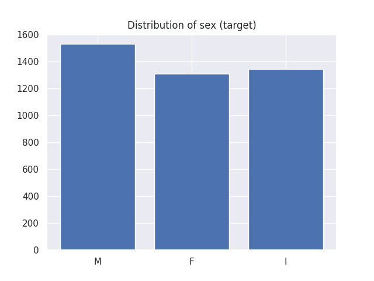
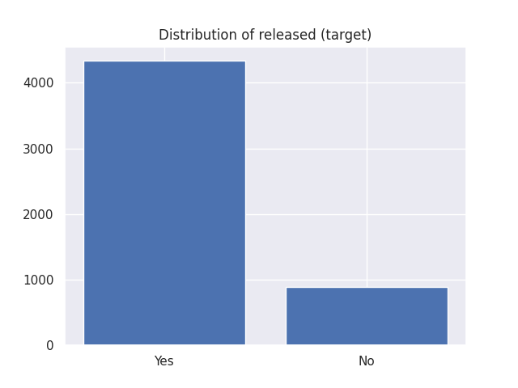
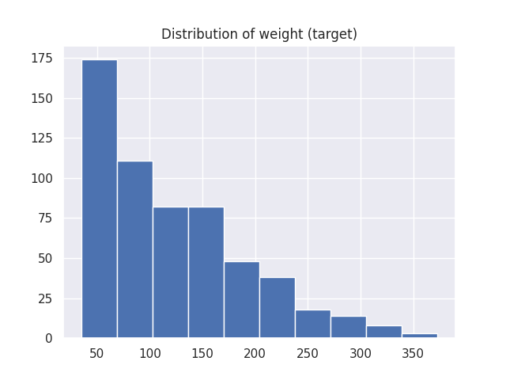
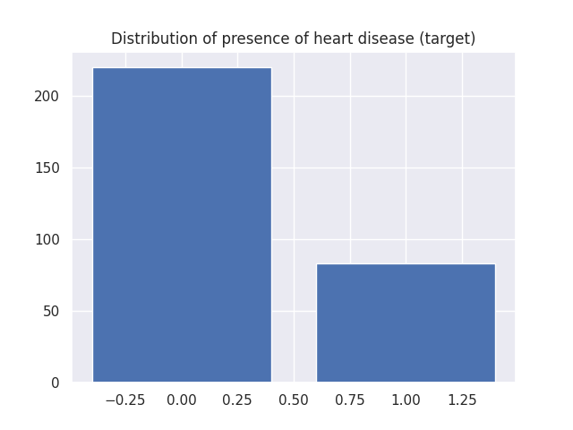
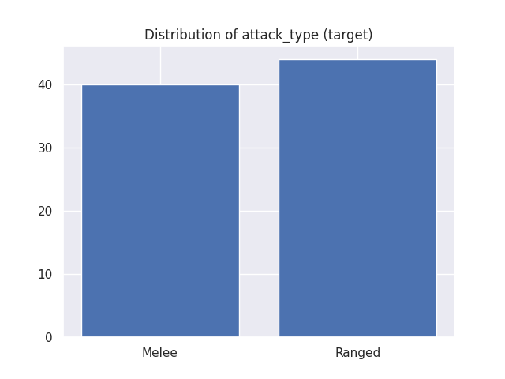
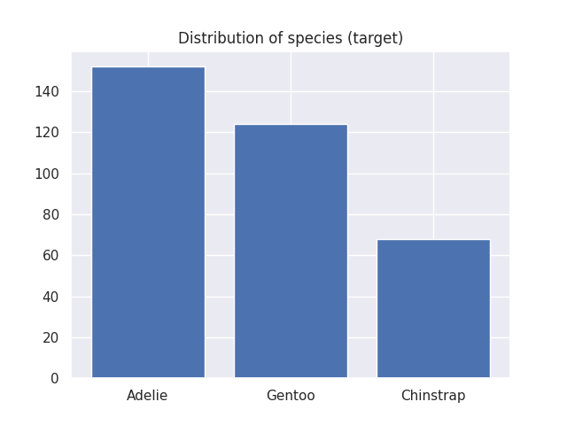
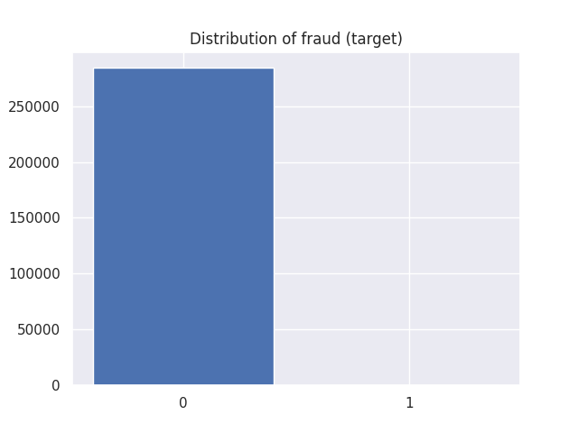
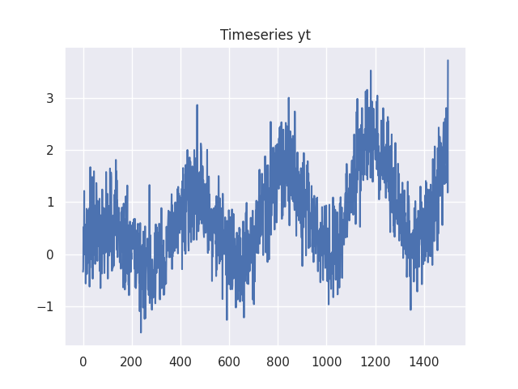

Datasets¶
Scikit-lego includes several datasets which can be used for testing purposes. Each dataset has different options for returning the data:
- When setting
as_frame=Truethe data, including the target, is returned as a (pandas) dataframe. - When setting
return_X_y=Truethe data is returned directly as(data, target)instead of a dict object.
This notebook describes the different sets included in Scikit-lego:
sklego.datasets.load_abaloneloads in the abalone datasetsklego.datasets.load_arrestsloads in a dataset with fairness concernssklego.datasets.load_chickenloads in the joyful chickweight datasetsklego.datasets.load_heroesloads a heroes of the storm datasetsklego.datasets.load_heartsloads a dataset about heartssklego.datasets.load_penguinsloads a lovely dataset about penguinssklego.datasets.fetch_creditcardfetch a fraud dataset from openmlsklego.datasets.make_simpleseriesmake a simulated timeseries
Imports¶
Loads necessary imports used in rest of the code snippets.
from collections import Counter
import matplotlib.pylab as plt
import seaborn as sns
sns.set_theme()
Abalone¶
Loads the abalone dataset where the goal is to predict the gender of the creature.
| sex | length | diameter | height | whole_weight | shucked_weight | viscera_weight | shell_weight | rings |
|---|---|---|---|---|---|---|---|---|
| M | 0.455 | 0.365 | 0.095 | 0.514 | 0.2245 | 0.101 | 0.15 | 15 |
| M | 0.35 | 0.265 | 0.09 | 0.2255 | 0.0995 | 0.0485 | 0.07 | 7 |
| F | 0.53 | 0.42 | 0.135 | 0.677 | 0.2565 | 0.1415 | 0.21 | 9 |
| M | 0.44 | 0.365 | 0.125 | 0.516 | 0.2155 | 0.114 | 0.155 | 10 |
| I | 0.33 | 0.255 | 0.08 | 0.205 | 0.0895 | 0.0395 | 0.055 | 7 |
X, y = load_abalone(return_X_y=True)
plt.bar(Counter(y).keys(), Counter(y).values())
plt.title("Distribution of sex (target)")

Arrests¶
Loads the arrests dataset which can serve as a benchmark for fairness.
It is data on the police treatment of individuals arrested in Toronto for simple possession of small quantities of marijuana.
The goal is to predict whether or not the arrestee was released with a summons while maintaining a degree of fairness.
| released | colour | year | age | sex | employed | citizen | checks |
|---|---|---|---|---|---|---|---|
| Yes | White | 2002 | 21 | Male | Yes | Yes | 3 |
| No | Black | 1999 | 17 | Male | Yes | Yes | 3 |
| Yes | White | 2000 | 24 | Male | Yes | Yes | 3 |
| No | Black | 2000 | 46 | Male | Yes | Yes | 1 |
| Yes | Black | 1999 | 27 | Female | Yes | Yes | 1 |
X, y = load_arrests(return_X_y=True)
plt.bar(Counter(y).keys(), Counter(y).values())
plt.title("Distribution of released (target)")

Chickens¶
Loads the chicken dataset. The data has 578 rows and 4 columns from an experiment on the effect of diet on early growth of chicks.
The body weights of the chicks were measured at birth and every second day thereafter until day 20. They were also measured on day 21.
There were four groups on chicks on different protein diets.
| weight | time | chick | diet |
|---|---|---|---|
| 42 | 0 | 1 | 1 |
| 51 | 2 | 1 | 1 |
| 59 | 4 | 1 | 1 |
| 64 | 6 | 1 | 1 |
| 76 | 8 | 1 | 1 |

Hearts¶
Loads the Cleveland Heart Diseases dataset. The goal is to predict the presence of a heart disease (target values 1, 2, 3, and 4).
The data originates from research to heart diseases by four institutions and originally contains 76 attributes. Yet, all published experiments refer to using a subset of 13 features and one target.
This implementation loads the Cleveland dataset of the research which is the only set used by ML researchers to this date.
| age | sex | cp | trestbps | chol | fbs | restecg | thalach | exang | oldpeak | slope | ca | thal | target |
|---|---|---|---|---|---|---|---|---|---|---|---|---|---|
| 63 | 1 | 1 | 145 | 233 | 1 | 2 | 150 | 0 | 2.3 | 3 | 0 | fixed | 0 |
| 67 | 1 | 4 | 160 | 286 | 0 | 2 | 108 | 1 | 1.5 | 2 | 3 | normal | 1 |
| 67 | 1 | 4 | 120 | 229 | 0 | 2 | 129 | 1 | 2.6 | 2 | 2 | reversible | 0 |
| 37 | 1 | 3 | 130 | 250 | 0 | 0 | 187 | 0 | 3.5 | 3 | 0 | normal | 0 |
| 41 | 0 | 2 | 130 | 204 | 0 | 2 | 172 | 0 | 1.4 | 1 | 0 | normal | 0 |
X, y = load_hearts(return_X_y=True)
plt.bar(Counter(y).keys(), Counter(y).values())
plt.title("Distribution of presence of heart disease (target)")

Heroes¶
A dataset from the video game Heroes of the storm.
The goal of the dataset is to predict the attack type.
Note that the pandas dataset returns more information.
| name | attack_type | role | health | attack | attack_spd |
|---|---|---|---|---|---|
| Artanis | Melee | Bruiser | 2470 | 111 | 1 |
| Chen | Melee | Bruiser | 2473 | 90 | 1.11 |
| Dehaka | Melee | Bruiser | 2434 | 100 | 1.11 |
| Imperius | Melee | Bruiser | 2450 | 122 | 0.83 |
| Leoric | Melee | Bruiser | 2550 | 109 | 0.77 |
X, y = load_heroes(return_X_y=True)
plt.bar(Counter(y).keys(), Counter(y).values())
plt.title("Distribution of attack_type (target)")

Penguins¶
Loads the penguins dataset, which is a lovely alternative for the iris dataset. We"ve added this dataset for educational use.
Data were collected and made available by Dr. Kristen Gorman and the Palmer Station, Antarctica LTER, a member of the Long Term Ecological Research Network.
The goal of the dataset is to predict which species of penguin a penguin belongs to.
from sklego.datasets import load_penguins
df_penguins = load_penguins(as_frame=True)
df_penguins.head()
| species | island | bill_length_mm | bill_depth_mm | flipper_length_mm | body_mass_g | sex |
|---|---|---|---|---|---|---|
| Adelie | Torgersen | 39.1 | 18.7 | 181 | 3750 | male |
| Adelie | Torgersen | 39.5 | 17.4 | 186 | 3800 | female |
| Adelie | Torgersen | 40.3 | 18 | 195 | 3250 | female |
| Adelie | Torgersen | nan | nan | nan | nan | nan |
| Adelie | Torgersen | 36.7 | 19.3 | 193 | 3450 | female |
X, y = load_penguins(return_X_y=True)
plt.bar(Counter(y).keys(), Counter(y).values())
plt.title("Distribution of species (target)")

Creditcard frauds¶
Loads the creditcard dataset. Downloads it if necessary.
Note that internally this is using sklearn.datasets.fetch_openml, which is experimental.
============== ==============
Samples total 284807
Dimensionality 29
Features real
Target int 0, 1
============== ==============
The datasets contains transactions made by credit cards in September 2013 by european cardholders. This dataset present transactions that occurred in two days, where we have 492 frauds out of 284,807 transactions.
The dataset is highly unbalanced, the positive class (frauds) account for 0.172% of all transactions.
Please cite:
Andrea Dal Pozzolo, Olivier Caelen, Reid A. Johnson and Gianluca Bontempi.
Calibrating Probability with Undersampling for Unbalanced Classification.
In Symposium on Computational Intelligence and Data Mining (CIDM), IEEE, 2015
from sklego.datasets import fetch_creditcard
dict_creditcard = fetch_creditcard(as_frame=True)
df_creditcard = dict_creditcard["frame"]
df_creditcard.head()
| V1 | V2 | V3 | V4 | V5 | V6 | V7 | V8 | V9 | V10 | V11 | V12 | V13 | V14 | V15 | V16 | V17 | V18 | V19 | V20 | V21 | V22 | V23 | V24 | V25 | V26 | V27 | V28 | Amount | Class |
|---|---|---|---|---|---|---|---|---|---|---|---|---|---|---|---|---|---|---|---|---|---|---|---|---|---|---|---|---|---|
| -1.35981 | -0.0727812 | 2.53635 | 1.37816 | -0.338321 | 0.462388 | 0.239599 | 0.0986979 | 0.363787 | 0.0907942 | -0.5516 | -0.617801 | -0.99139 | -0.311169 | 1.46818 | -0.470401 | 0.207971 | 0.0257906 | 0.403993 | 0.251412 | -0.0183068 | 0.277838 | -0.110474 | 0.0669281 | 0.128539 | -0.189115 | 0.133558 | -0.0210531 | 149.62 | 0 |
| 1.19186 | 0.266151 | 0.16648 | 0.448154 | 0.0600176 | -0.0823608 | -0.078803 | 0.0851017 | -0.255425 | -0.166974 | 1.61273 | 1.06524 | 0.489095 | -0.143772 | 0.635558 | 0.463917 | -0.114805 | -0.183361 | -0.145783 | -0.0690831 | -0.225775 | -0.638672 | 0.101288 | -0.339846 | 0.16717 | 0.125895 | -0.0089831 | 0.0147242 | 2.69 | 0 |
| -1.35835 | -1.34016 | 1.77321 | 0.37978 | -0.503198 | 1.8005 | 0.791461 | 0.247676 | -1.51465 | 0.207643 | 0.624501 | 0.0660837 | 0.717293 | -0.165946 | 2.34586 | -2.89008 | 1.10997 | -0.121359 | -2.26186 | 0.52498 | 0.247998 | 0.771679 | 0.909412 | -0.689281 | -0.327642 | -0.139097 | -0.0553528 | -0.0597518 | 378.66 | 0 |
| -0.966272 | -0.185226 | 1.79299 | -0.863291 | -0.0103089 | 1.2472 | 0.237609 | 0.377436 | -1.38702 | -0.0549519 | -0.226487 | 0.178228 | 0.507757 | -0.287924 | -0.631418 | -1.05965 | -0.684093 | 1.96578 | -1.23262 | -0.208038 | -0.1083 | 0.0052736 | -0.190321 | -1.17558 | 0.647376 | -0.221929 | 0.0627228 | 0.0614576 | 123.5 | 0 |
| -1.15823 | 0.877737 | 1.54872 | 0.403034 | -0.407193 | 0.0959215 | 0.592941 | -0.270533 | 0.817739 | 0.753074 | -0.822843 | 0.538196 | 1.34585 | -1.11967 | 0.175121 | -0.451449 | -0.237033 | -0.0381948 | 0.803487 | 0.408542 | -0.0094307 | 0.798278 | -0.137458 | 0.141267 | -0.20601 | 0.502292 | 0.219422 | 0.215153 | 69.99 | 0 |
X, y = dict_creditcard["data"], dict_creditcard["target"]
plt.bar(Counter(y).keys(), Counter(y).values())
plt.title("Distribution of fraud (target)")

Simpleseries¶
Generate a very simple timeseries dataset to play with. The generator assumes to generate daily data with a season, trend and noise.
from sklego.datasets import make_simpleseries
df_simpleseries = make_simpleseries(as_frame=True, n_samples=1500, trend=0.001)
df_simpleseries.head()
| yt | |
|---|---|
| 0 | -0.335058 |
| 1 | -0.283375 |
| 2 | 0.521791 |
| 3 | 0.50202 |
| 4 | 0.310048 |
